frame128: 원배율 / nearest ×8 / 변화 부위 ×16

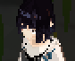
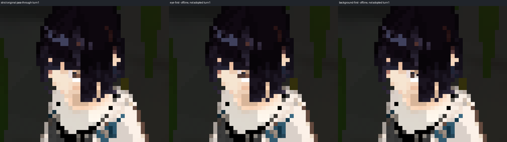
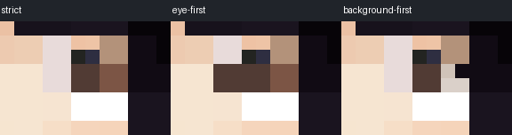
제품77 유지 · 격리된 실제 GPU35상태 · 미관 완성 아님 · 아래 정책 비교는 오프라인
현재 평가된 비눈 메쉬를 기존 원본 재질로 그려 RGBA/role/owner/depth/UV/primitive를 한 표본에서 공급합니다. 원래 유효한 피부 복원은 그대로 보존하고, 없을 때만 비눈 source를 사용합니다. 비눈 source도 없을 때는 실제 Native395 world 버퍼를 원래 native world sampler와 같은 정수 좌표에서 읽습니다. 주변 피부색·평균색·가상 깊이를 생성하지 않습니다.
동일 프레임의 기존96과 수정98을 같이 실행했습니다. 위상10·보행8·회전10·평가 Close/재개방7장, 총35상태에서 기존 복원 실패3 native 픽셀만 변경됐습니다. 나머지 기존 유효 출력은 colour/owner/depth/audit 네 필드 모두 그대로입니다. 독립 CPU 합성도 실제 GPU 네 필드와35/35 exact입니다. 최초 Q/가시성/공동 선택은 바꾸지 않았습니다. 원래 coverage 동률의9 native 미확정은 그대로 남았습니다.
97의 coarse base만 보면 두 픽셀이 모두 머리카락처럼 보였습니다. 정확한 native2x 표본에서는 하나만 실제 머리카락 삼각형761이며, 다른 하나에는 비눈 가시 삼각형이 없어 실제 world가 맞습니다. frame134 한 픽셀도 실제 world입니다. 삼각형/원본 alpha 재검사는 출처 증거를 참조하십시오. 머리카락 UV는 CPU double과0.000154 차이가 있으나 동일 삼각형 안이고 재투영 오차 약0.00020px입니다. RGB/owner/primitive 복사는 오차 없이 exact이며 UV double bit-exact라고 주장하지 않습니다.
전체 검증/한계 · producer 카메라/좌표 계약 및 raw view label 주의 · 수정3픽셀 전 수치 · 동일 프레임 대조 · 미채택 두 실패 원인 · Compose / PackWorld98 · 현재 비눈 source 패스 · 정상 serial 연결
| frame | native 절대좌표 | 출처 | RGB8 | 최종 owner |
|---|---|---|---|---|
| 128 | [434, 438] | actual native world sample | [35, 36, 33] | [0.0, 0.0, 0.0, 0.0] |
| 128 | [435, 438] | same-frame non-eye hair | [46, 46, 65] | [12.0, 0.0, 13.686083793640137, 761.0] |
| 134 | [437, 440] | actual native world sample | [44, 46, 43] | [0.0, 0.0, 0.0, 0.0] |
그림은 동일 native head·상체 ROI입니다. 전체 캐릭터·모든 모델 검증은 아닙니다. 4열은 제품77 / 기존96 / 수정98 / 수정 녹색·미확정 분홍 표시입니다. 원배율 PNG와 정수 nearest 확대를 함께 제공합니다.
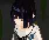
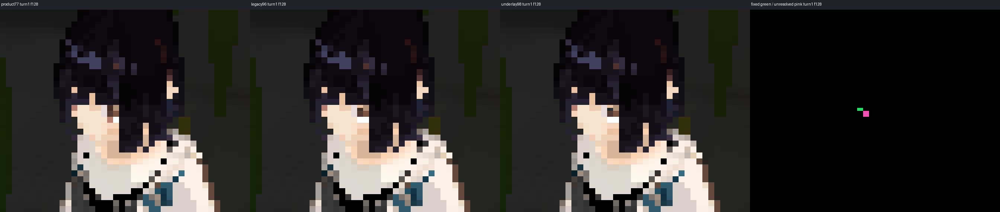
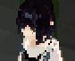
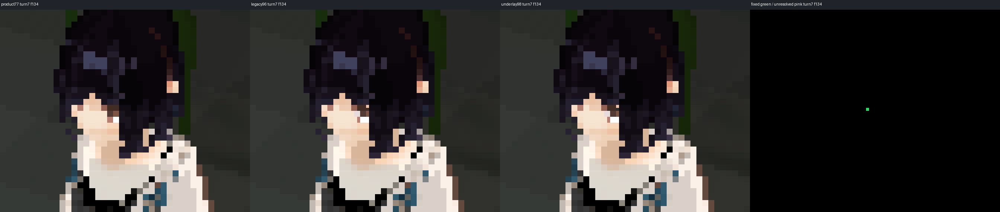
원래 파츠 깊이 순서는 이미 표본별 가림에 사용합니다. 이것은16표본 합계의 홍채8:흰자8 같은 동률의 픽셀 디자인을 결정하지는 않습니다. 같은 현재 가시 원본 texel의 witness가 있으면 재사용하지만, 그 원본이 사라진 경우 임의로 과거 색을 붙잡지 않습니다.
왼쪽: 엄격 보존(미확정은 원본 통과). 가운데: 눈파트 우선(홍채→흰자→선→바탕). 오른쪽: 바탕/흰자 우선(바탕→흰자→홍채→선). 둘 다 정확한 현재 coverage 동률에만 적용하는 오프라인 디자인 비교이며 GPU 제품에 채택하지 않았습니다. unknown alpha는 계속 미확정입니다. 미확정 수0은 성공의 증거가 아니라 우선순위 정책으로 결정을 추가한 결과입니다. 전체 변경 좌표·원본 RGBA·owner·정책.
두 정책의 원배율·정수확대와 짧은 같은 동작 시퀀스를 보고 선택할 수 있습니다. 완전 Close는 두 정책 모두 홍채/흰자0이며 실제 평가된 mesh와 대조했습니다. 어떤 정책도 회전 시 눈 크기를 고정하거나 RGB 시간평균으로 잔상을 만들지 않습니다.
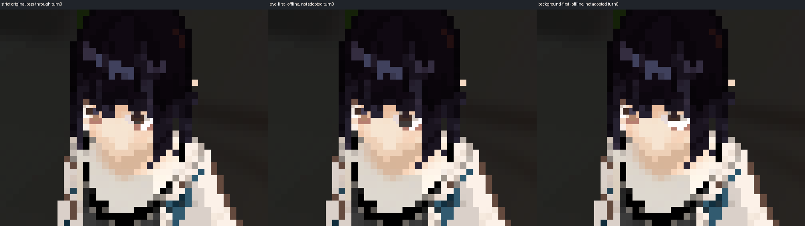
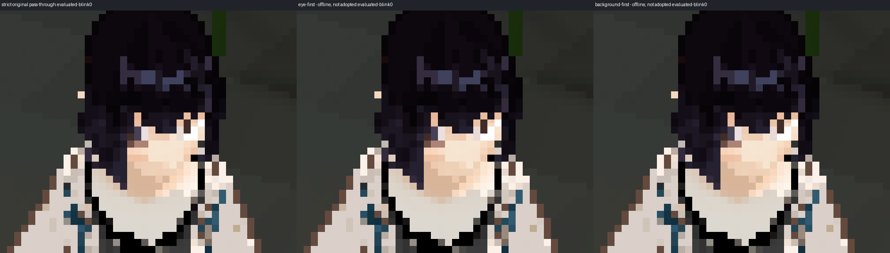
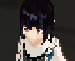
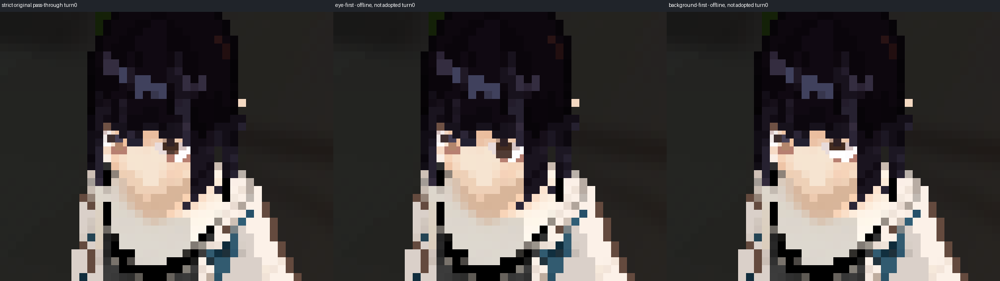
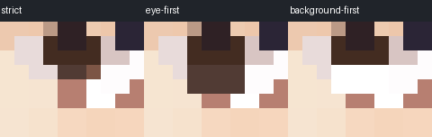



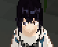
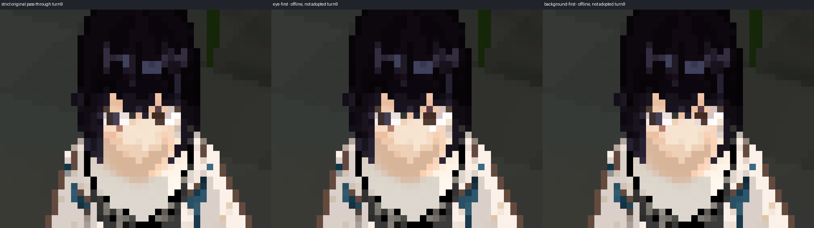
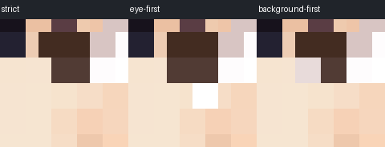

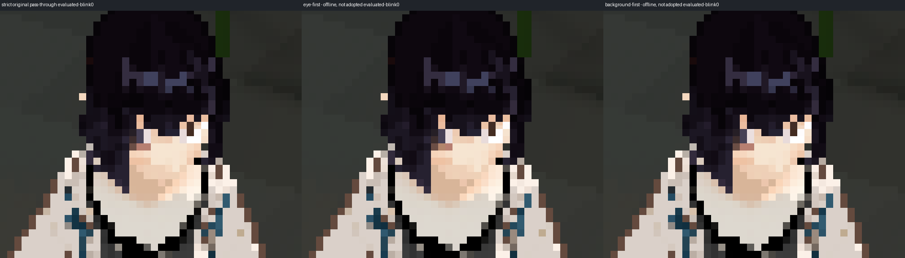


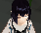
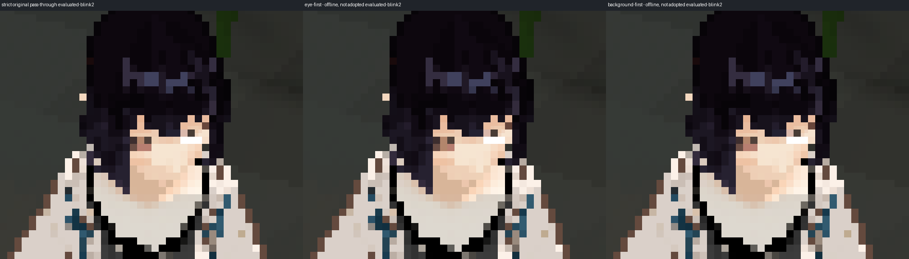
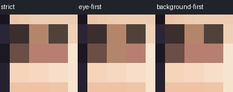


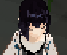
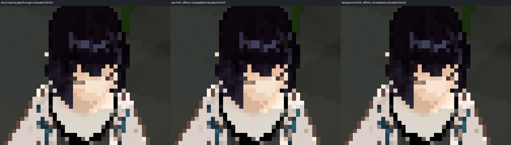
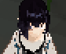

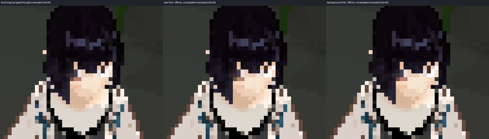
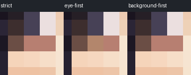
세 시험 모두 정상 Edit 복귀, dirty31·입력 객체22값·장치/옵션/pipeline/time 보존, native 직렬화47/47 exact, RT30→30입니다. 첫 시험의 부분 투명 눈썹 우선 회귀와 둘째 시험의 물리/이동 좌표 재사용 버그는 미채택으로 보존했습니다. 최종 시험에서는 기존 유효 출력 변경0, 새 회귀0입니다.
표준 공개 Recorder의 GPU marker는 유효하나 GPU sample block은0이어서 GPU 시간·FPS는 미측정입니다. CPU marker 시간은 GPU 시간으로 쓰지 않습니다. 프로파일링/보안 설정을 바꾸지 않았습니다. 현재 비눈 패스의11draw와 world pack 비용은 남아 있습니다. 기존96 비교 RT·추가 합성은 진단 전용 오버헤드이며 제품 예산으로 숨기지 않습니다.
부분 투명 비눈 바탕만 있는 경우 새 팔레트 합성 규칙은 아직 없으므로 확정 복원으로 취급하지 않습니다. 새 pass의 동시 실제 URP 다중뷰는 별도 미검증이고, 공통 engine의 모델/view 격리·수명은97에서 검사했습니다. 현재 모델/원본 sampler·기존 role 관계로 검증했으며 임의 모델 범용성을 주장하지 않습니다. 제품 기본 경로 연결과 동률 정책은 아직 미적용입니다.
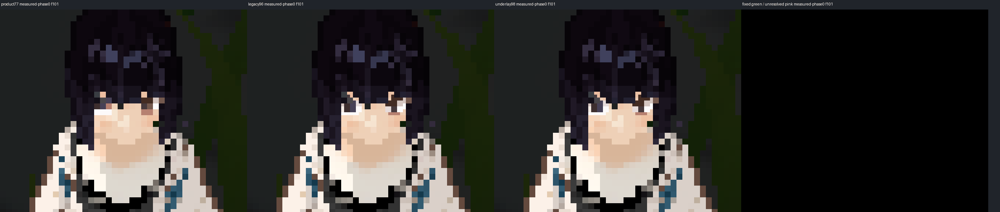
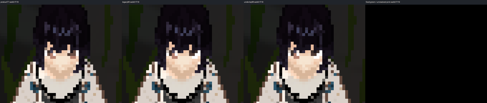
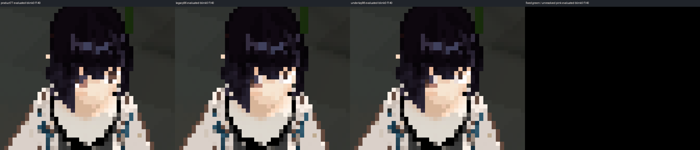